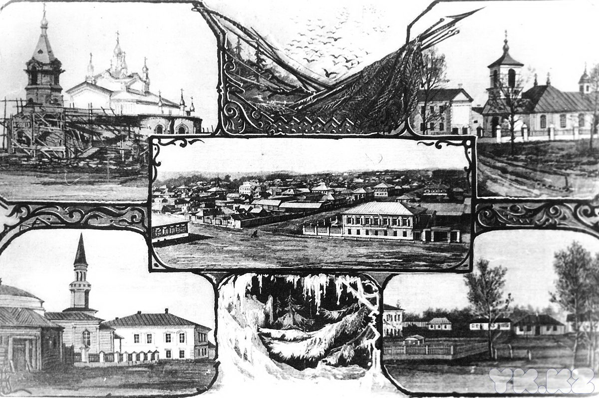
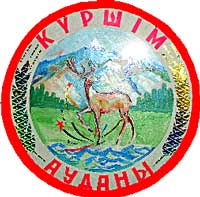
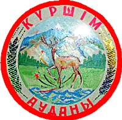

В верховьях Иртыша человек появился еще в ледниковый период (средний палеолит). Это были небольшие группы неандертальцев-охотников на мамонтов, носорогов, бизонов.
Следы стоянок древних охотников эпохи неолита были обнаружены в районе Зыряновска, у Усть-Нарыма, на семипалатинских дюнах. Для андроновских племен, живших в верховьях Иртыша в эпоху бронзы, самым важным и прогрессивным ремеслом было горное дело и металлургия. В год они добывали не менее десяти тонн готовой бронзы.
В VIII веке до н.э. началась эпоха ранних кочевников-племен аримаснов и саков. Впервые века н.э. в кочевом мире начали складываться и оформляться патриархально-феодальные отношения, которые продолжали оставаться господствующими у кочевников до ХХ века.
В IX-XIII веках по берегам Иртыша располагались укрепления и города кимаков, кочевья найманов. В конце XVI-XVIIв.в. различные области одна за другой входят в состав русского государства, строятся русские города и селения.


 
